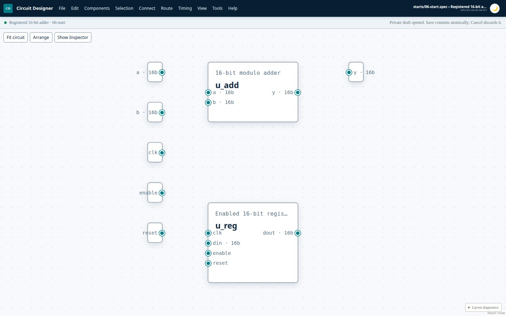
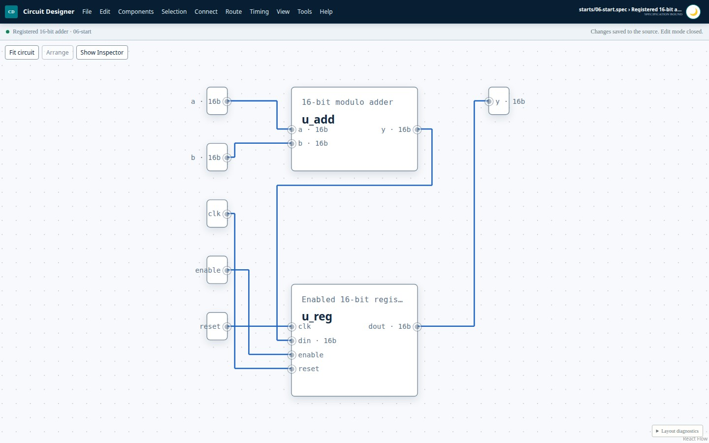

CORE 06 / 09 · GUIDED PRACTICE
Connect and save a circuit
Save seven explicit wire connections back to the Spec.
Before you start
Spec Editor, Circuit service, and Circuit Designer. The start has two instances, six boundary ports, and no nets.
Read each action, do it, then compare the expected result before continuing. Use a fresh prepared start to retry. Reading time and automated execution time are not measured learner practice time.
Actions
Open the source-bound Design
Open06-start.spec, then its Design’s Options → Open in Circuit Designer. Inspect the source binding.Expected result: The Circuit has u_add, u_reg, and six boundary ports, with no nets.
Begin a private draft
Select Edit → Begin editing.Expected result: Save to Spec is available for the private draft. A visible draft is not saved source.

An editable source-bound circuit has a private draft and Save to Spec control. Select the image to view its full size. Arrange the blocks
Move u_add to the left of u_reg. Drag empty canvas to pan; use View → Fit circuit to see all terminals.Expected result: All terminals are readable. Moving a block changes placement, not its hardware interface.
Read the connection map
Use the following map.topmeans the containing boundary, not a third instance.Net name Driver Sink Bits operand_a top.a u_add.a 16 operand_b top.b u_add.b 16 sum u_add.y u_reg.din 16 clock top.clk u_reg.clk 1 reset top.reset u_reg.reset 1 enable top.enable u_reg.enable 1 result u_reg.dout top.y 16 Expected result: Every row has a driver, sink, name, and bit width.
Create the first input connection
Select Connect → New connection. Enter the first Net label, select the driver as Endpoint A and sink as Endpoint B, and set both LSB fields to zero and Width (0=full) to zero. Select Create net.Expected result: The first named input net joins the intended boundary port and adder port.
Complete the data path
Repeat the dialog for the other operand, the adder-to-register data net, and the output net, using the exact table names.Expected result: Both adder inputs are connected; u_add.y drives u_reg.din; u_reg.dout reaches the boundary.
Connect the control signals
Create the clock, reset, and enable connections from the remaining rows.Expected result: There are seven nets. The scalar controls and 16-bit data paths have compatible widths.
Inspect and route
Select each net to check endpoints. Drag route segments to improve readability. Direct terminal dragging can also connect ports; the dialog makes the required net names explicit.Expected result: Each net has one driver and one sink. Routing edits have not changed endpoints.
Save the draft
Select Save to Spec and wait for the saved-source confirmation.Expected result: The Circuit service confirms that the source Spec accepted this draft.
Check both applications
Return to Spec Editor, reopen the same Spec, and inspect the Design connection table and regenerated preview.Expected result: The saved source and Circuit agree on two instances, six boundary ports, and seven nets.

The completed datapath has seven direct wire connections. Select the image to view its full size.


Check your result
The Spec and Circuit agree: two instances, six boundary ports, and seven named nets. Each net has one driver and one sink. u_add.y feeds u_reg.din.
Try it yourself
Begin another edit, move u_reg, then use File → Cancel changes. Confirm that the saved layout and connections return.
If it fails
If Save fails, retain the draft and read the diagnostic. Check source freshness and signal widths. If another tab holds editing access, close or finish that edit before retrying. Do not assume that a visible draft is saved.
Continue
NEXT GUIDEGenerate an RTL projectReference: circuit designer · Complete example